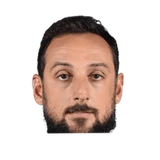

“I followed the Euroleague for quite some time, and when [Messina] decided to go back to CSKA, he asked me if I wanted to join him as an assistant. So, I don't know if it was difficult as it was unusual to try and think about what that would be like. My wife, Amy, was really supportive. We had two young kids. So on a personal level, we were doing something that was a little unusual, but we were excited to have the life experience, to be honest with you.”

What NBA players and coaches have said about Ettore Messina
4 quotes about Ettore Messina from 4 players, coaches and executives, newest first. Each one links to its original source.
Best quotes
Spurs head coach Gregg Popovich said.
“Coach Messina is an exceptional coach, a great leader and someone we can all learn from.”
“When you lose Ettore and his family, it's a big loss. But it's not a loss. He's always a part of our family. We look forward to the times we get to share together.”
What Ettore Messina has said about other players and coaches →
Quotes per season
Who talks about Ettore Messina most
- Gregg Popovich1 quote

Marco Belinelli1 quote Quin Snyder1 quote
Quin Snyder1 quote- RC Buford1 quote
Back and forth
2018-19
1 quote“When you lose Ettore and his family, it's a big loss. But it's not a loss. He's always a part of our family. We look forward to the times we get to share together.”
2017-18
1 quote“I followed the Euroleague for quite some time, and when [Messina] decided to go back to CSKA, he asked me if I wanted to join him as an assistant. So, I don't know if it was difficult as it was unusual to try and think about what that would be like. My wife, Amy, was really supportive. We had two young kids. So on a personal level, we were doing something that was a little unusual, but we were excited to have the life experience, to be honest with you.”
2014-15
2 quotesOrazio Cauchi:Marco Belinelli on his relationship with Ettore Messina:
“His presence is fundamental for me. He always give me good advices”
Spurs head coach Gregg Popovich said.
“Coach Messina is an exceptional coach, a great leader and someone we can all learn from.”